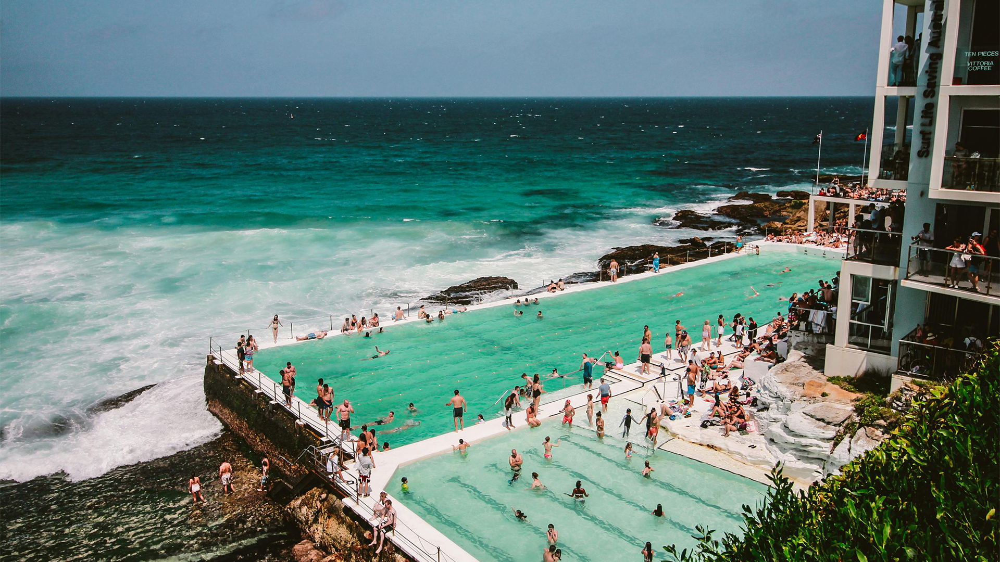
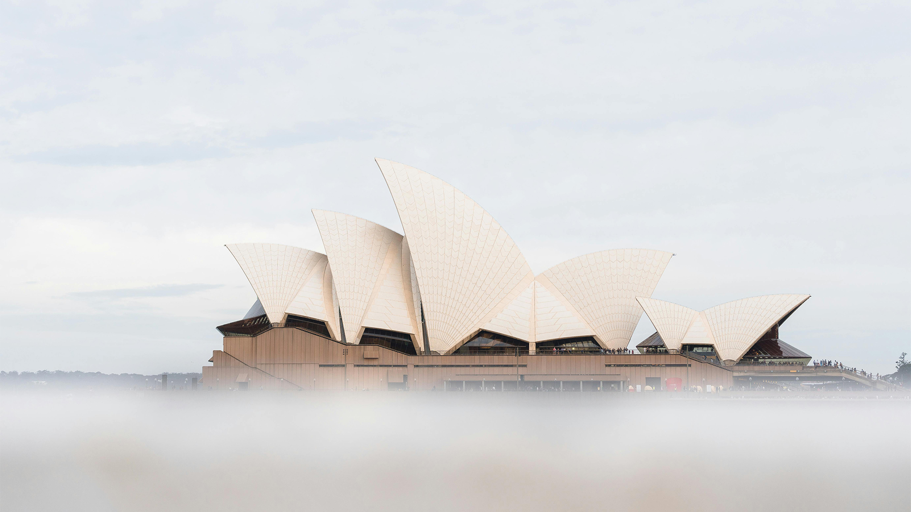
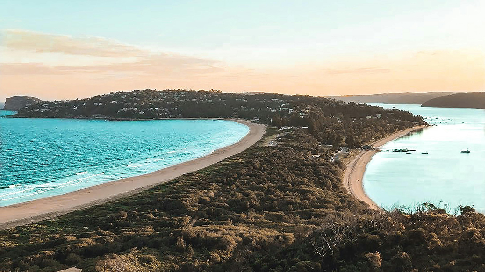

Sydney Photos
Here are some of my favorite photos from Sydney that I took while walking around the city in March 2024. The camera used is a Sony Alpha 7 III, capturing iconic landmarks like the Sydney Opera House and the bustling harbor.
[These photos and this website are for assessment and web development practice only. The photos are not owned by the web designer and were downloaded from Pexels.com as free copyright images.]


